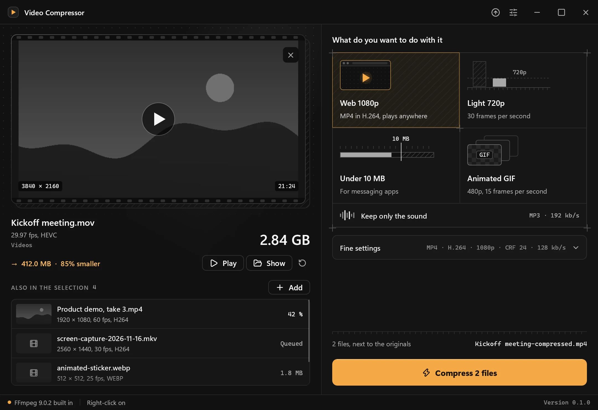

Right click → lighter video
A small window that compresses or converts your videos straight from the right-click menu, on Windows, Linux and macOS. FFmpeg is compiled in, there is nothing else to install.

These are captures of the real window. Your video on the left, what you want from it on the right.
Right-click a video and the window opens with the file already loaded. Select ten videos and they arrive together, processed one after the other.
FFmpeg and its encoders are compiled into the executable. No companion program to set up, no download on first launch.
Web 1080p, Light 720p, Under 10 MB, animated GIF or sound only. Fine settings stay folded until you need them.
Give the weight not to exceed and the app works out the bitrate. If the first try overshoots, it runs again with a corrected one.
MP4, MKV, MOV and WebM in H.264, H.265, AV1 or VP9. Even an animated WebP, which FFmpeg cannot read, becomes an MP4.
At startup the app checks for a newer version. One click downloads it, verifies its checksum and restarts the window.